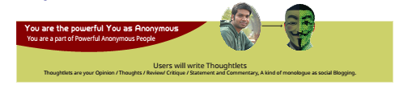

Newslets platform is designed on the concepts practiced in real life situations. As a User in User Category, you are part of the People, part of the source of Power, source of Democracy, source of collective conscious.
1. By design, User of Newslets is an Anonymous entity. You will be kept Anonymous through a Numerical ID assigned parallel to your Alphabetical ID. Numerical ID will be used only when you Follow another User and being Followed by another User. It is because both of you are in the same class.
You will be Following and be Followed by your own Class for the purposes of forming consensus on your common interests.
YOU will be able to Follow Only Social Journalist, Organization, Brand, Celeb, the social beneficiaries of your collective attentions and Engagements. But, they are not allowed to follow you. They will only know about quantity of Anonymous Followers as a Total Figure.
2. Newslets platform has other 4 different types of users identified as Social Journalist, Organization, Brand, Celeb. These categories of users are collectively termed as "Beneficiaries". They are the natural beneficiaries of your presence in the Platform. As a User, you are a Reader of news written by Social Journalist, you vote/support/ Organizations, you become Consumer/Customer to Brand, you support/cheer Celeb.
They have to create relevant, useful, worthy contents to achieve your attentions and Engagements.
3. As User, you will Follow Beneficiaries according to your needs of life and lifestyle. Newslets is designed on the principle of "Follow Objectively". Meaning follow only those who you need to. You are able to Follow these Beneficiaries, but Beneficiaries will not be able to Follow you back. Beneficiaries are those who you will be following. They will receive your Posts via your Numerical ID, so you will always remain Anonymous to them.
As for example, you will Follow those Social Journalists who represent places you lived or visited or dear to your heart. You will follow on the basis of your Reference Level, Interest Level, Satisfaction Level. This is the world you need to know on daily basis.
As for example, you will follow local businesses where you go frequently as customers. You will follow only those Brands that you need for making informed purchasing decisions.
As for example, you will follow Organizations (Govt. Ministries / NGOs / UN etc. / MPs Senators Representatives Mayors etc ) according to your needs of life and living.
As for example, you will follow Local Celebs (sports/culture/writing/others) and support/cheer them, because they are your celebrities. Those are close to you, those you want to celebrate life with.
4. Newslets is a communication platform. Your Posts will be distributed to all of your Following. So your review/suggestion/statement/opinion/thouhts will form a consensus among your Following and Followers. Beneficiaries will know your thoughts immediately and take corrective measures. So be responsible and guide Beneficiaries as responsible citizencitizen of the platform.
5. Newslets will accept Graduated Users depending upon performance of the contents you achieve. We will be looking at frequency of posts, quantity and quality of Engagements received on posts, Once recognized as Graduated User, you will have revenue sharing options from local ads.